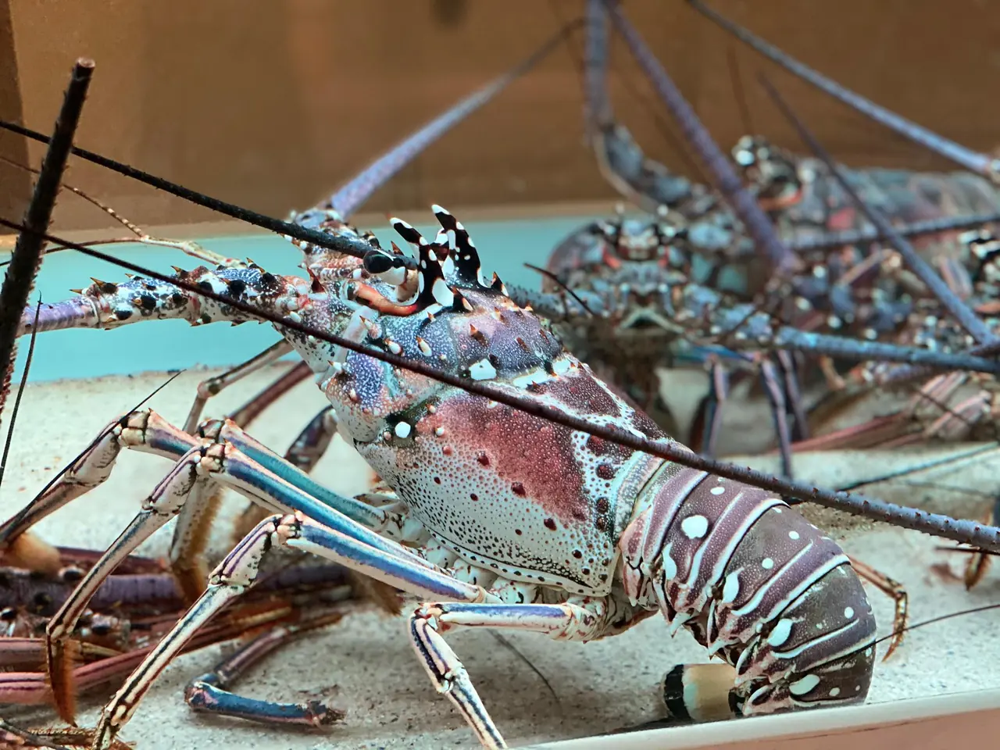
Le vivier
La langouste, choisie devant vous.
Langouste du vivier, préparée selon votre choix : grillée, thermidor ou flambée.
41 €/ lb90 €/ kg
Grand Case · Saint-Martin, Antilles françaises
Un restaurant français aux saveurs de la mer, directement sur la baie de Grand Case. Ouvert tous les jours.
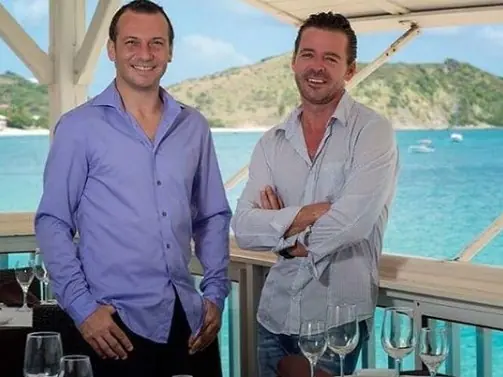
Nouveau départ
Après deux longues années d’absence, suite au terrible cyclone Irma qui a frappé l’île de Saint-Martin en septembre 2017, toute l’équipe d’Ocean 82 est heureuse de vous accueillir à nouveau dans un établissement entièrement rénové.
Une nouvelle décoration, mais la même passion : partager avec vous un moment culinaire d’exception, que vous soyez en famille ou entre amis, en vacances ou résidents de l’île.
Midi · dès 11h30*
Une vue imprenable : d’un côté le boulevard animé de Grand Case, de l’autre la magnifique baie.
* À partir du 1er décembre : 11h30 – 22h30. Jusqu’au 30 novembre : 15h00 – 22h30.
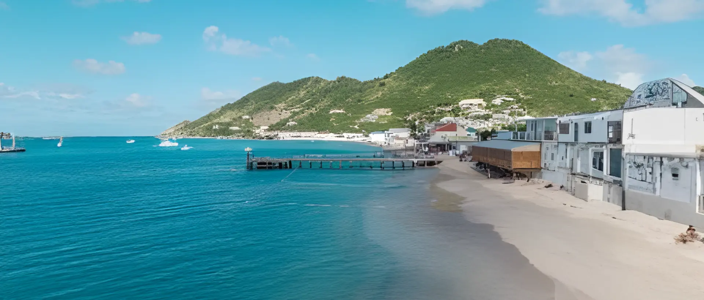

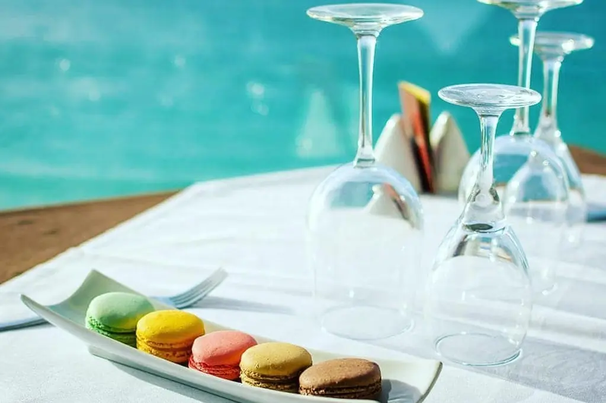
Golden hour
Directement sur la baie de Grand Case : le soleil se couche devant vous.
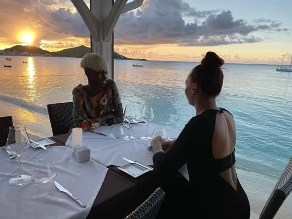
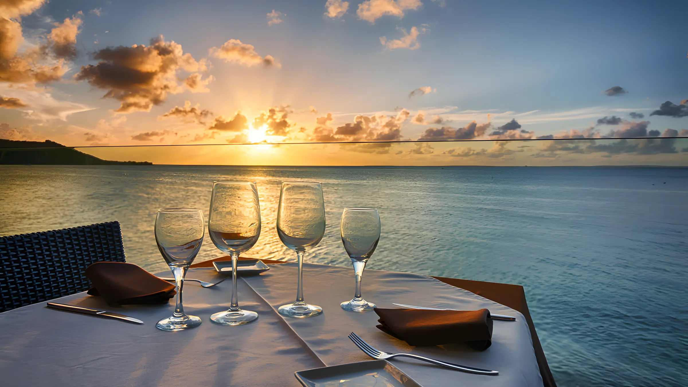
La nuit · jusqu’à 22h30
Alliant simplicité et design chic, Ocean 82 est un restaurant français aux saveurs de la mer. Directement sur la baie de Grand Case, la cuisine du chef Franck Vuillemin et de son équipe va vous donner envie de revenir encore et encore.
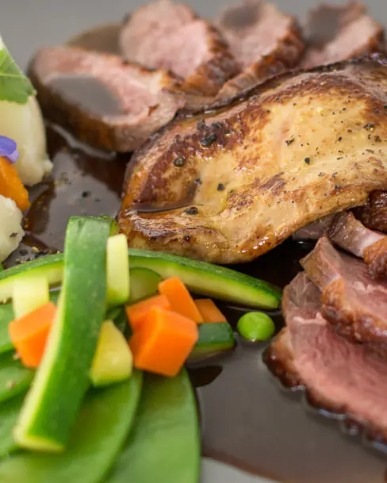
Roasted duck breast, sugar cane sauce
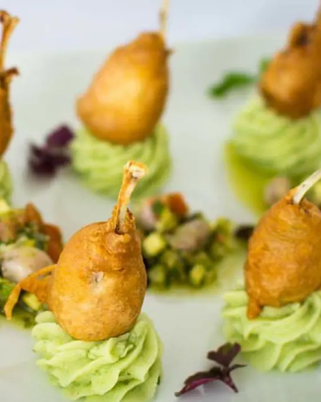
Frog legs with garlic and parsley
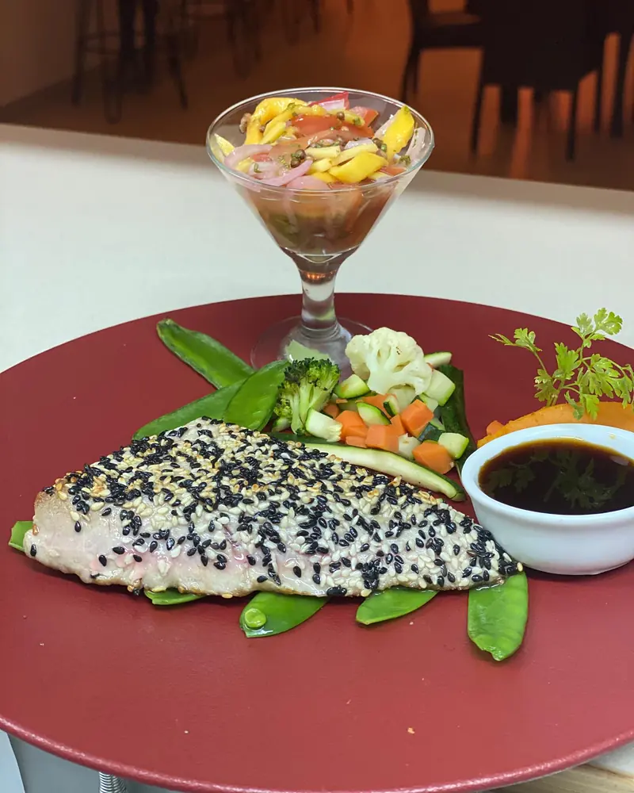
Local tuna tataki, citrus mango salsa

Oysters on ice

Fruit of the day in trompe-l’œil

Desserts by the pastry chef

Desserts by the pastry chef
Mahi-mahi tartare trilogy: Peruvian, Tahitian and Creole style
Crisp mixed salad with a light vinaigrette
The classic Caesar salad
Tuna spring roll with fresh apples and imperial sauce
The famous homemade duck liver pâté stuffed with fig preserve
Frog legs with garlic and parsley
Homemade lobster and mushroom raviole, basil and Madagascar peppercorn sauce
Traditional “escargots” gratinated with garlic butter
Perfect poached egg
Pan-seared foie gras with white grape, honey and balsamic sauce
Traditional gratinated onion soup
Creamy lobster bisque
Traditional Spanish gazpacho
Three-cheese penne
Lobster fettuccine
Fettuccine Alfredo
Linguine with clams
Penne arrabbiata
Lobster from the tank: grilled, thermidor or flambéed (+€5)
Roasted local snapper with mango chutney and white wine butter sauce
Caribbean fish pot: sea scallops, lobster, snapper and mussels in a creamy seafood broth
Local tuna tataki with citrus mango salsa and caramel soy sauce
Roasted sea scallops, smoked duck breast carpaccio, creamy lentils and foie gras sauce
Sautéed shrimp with garlic, parsley and zucchini
Accompagnements au choix : assortiment de légumes, gratin de pommes de terre, purée de pommes de terre, purée de patates douces, riz, pâtes et salade. Side of your choice: vegetables, potato gratin, mashed potato, mashed sweet potato, rice, pasta or salad.
Beef tenderloin “à la plancha” with morel mushroom sauce
Thinly sliced roasted duck breast, sugar cane sauce and balsamic reduction
Lamb shank braised for 24 hours with white wine, honey and rosemary
Braised beef chuck with Burgundy garnish (bacon and mushroom)
Cajun-spiced free-range chicken breast stuffed with prosciutto, confit tomato and Comté cheese
Accompagnements au choix : assortiment de légumes, gratin de pommes de terre, purée de pommes de terre, purée de patates douces, riz, pâtes et salade. Side of your choice: vegetables, potato gratin, mashed potato, mashed sweet potato, rice, pasta or salad.
Assorted cheeses with a balsamic-dressed salad, grapes and walnuts
Ice cream and sorbet (per scoop)
Homemade vanilla crème brûlée
The amazing profiterole
Homemade molten chocolate cake with vanilla ice cream
Fruit of the day in trompe-l’œil, Ocean 82 style
Grand Marnier soufflé with custard and chocolate sauce
Nos prix s’entendent hors TGCA (4 %). Local tax (TGCA 4%) not included.

Le vivier
Langouste du vivier, préparée selon votre choix : grillée, thermidor ou flambée.
41 €/ lb90 €/ kg
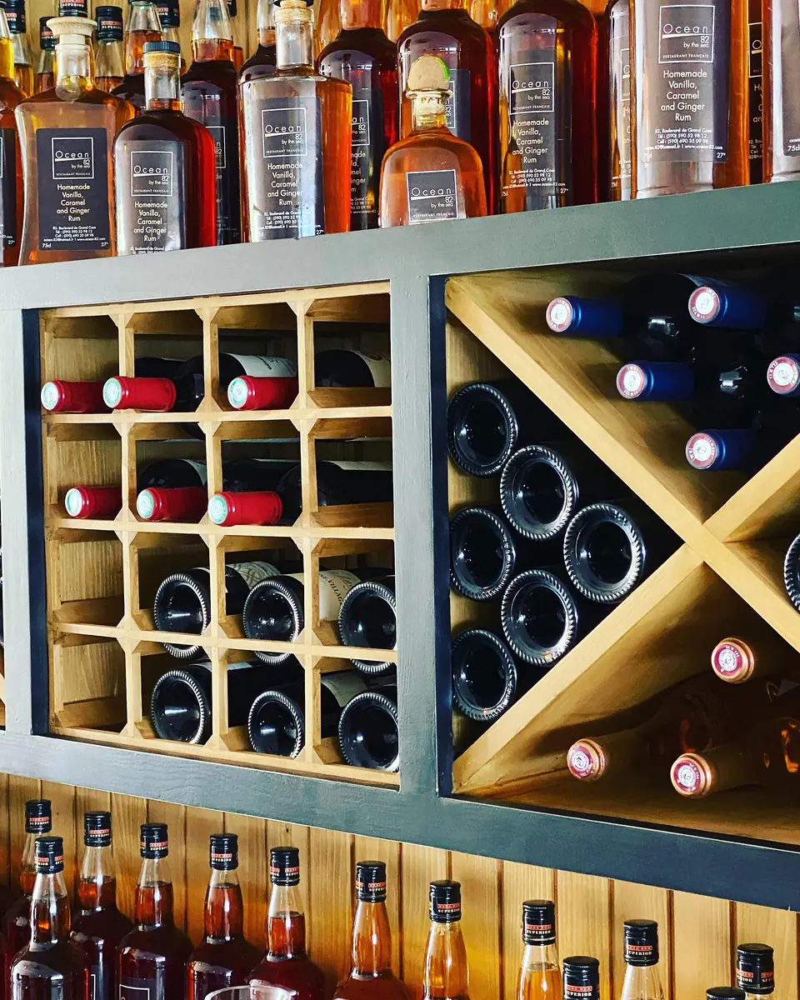
La cave
Une gamme de grands crus, unique à Saint-Martin, pour le plus grand plaisir des amateurs de vins.
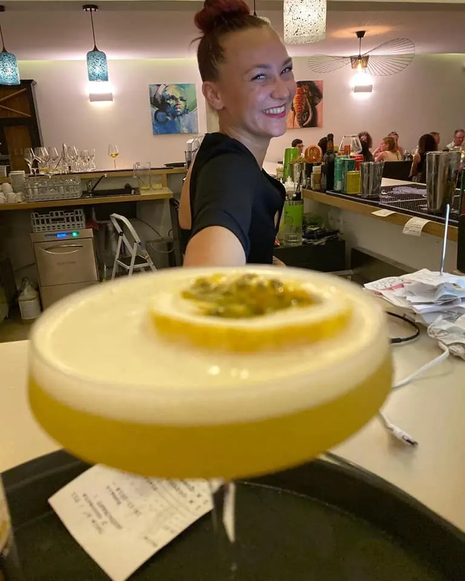
Le bar
Cognacs Camus, armagnacs Janneau, rhums vieux, calvados… une sélection de digestifs pour prolonger la soirée.
Visite 360°
Du ciel jusqu’à votre table : glissez pour regarder autour de vous, touchez un repère pour passer d’une pièce à l’autre.
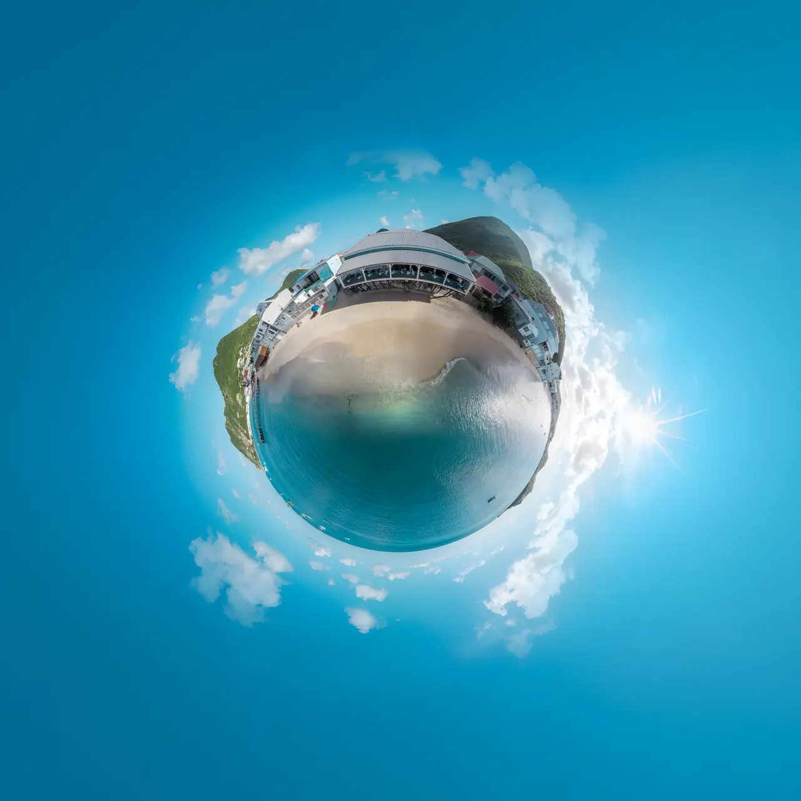

Glissez pour regarder
Réservation
Réserver est simple : appelez-nous entre 15h et 18h, écrivez-nous sur WhatsApp, ou utilisez le formulaire.
WhatsApp · +590 690 77 77 57Le restaurant est disponible pour vos événements privés : mariages, anniversaires… N’hésitez pas à nous contacter.